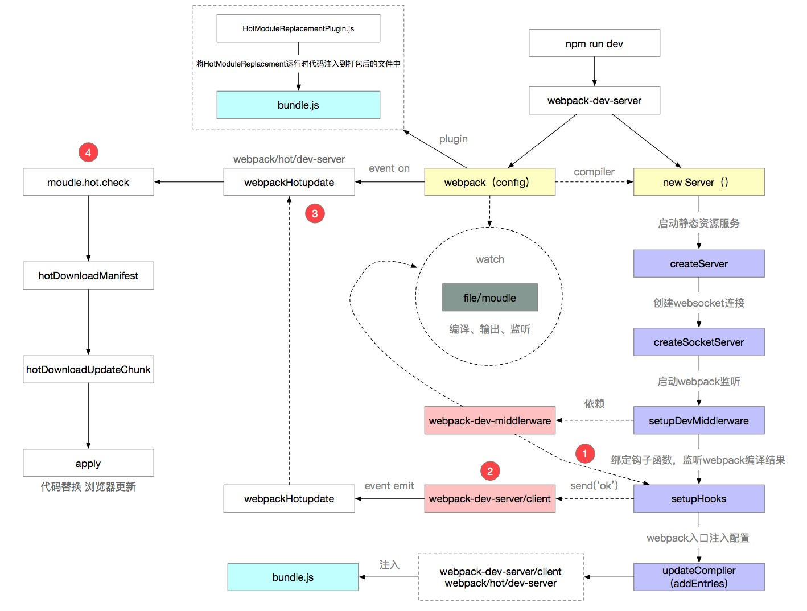

webpack热更新
Hot Module Replacement，简称HMR，无需完全刷新整个页面的同时，更新模块。
HMR的好处：节省宝贵的开发时间、提升开发体验。
该有的疑问：
1. 浏览器是如何知道本地代码重新编译了，并迅速请求了新生成的文件？
2. 是谁告知了浏览器？
3. 浏览器获得这些文件又是如何热更新成功的？
4. HotModuleReplacementPlugin干了什么伟大的事情？
1.刷新一般分为两种
一种是页面刷新，不保留页面状态，就是简单粗暴，直接window.location.reload()。
另一种是基于WDS (Webpack-dev-server)的模块热替换，只需要局部刷新页面上发生变化的模块，同时可以保留当前的页面状态，比如复选框的选中状态、输入框的输入等。
2.webpack的编译构建过程
3.webpack-dev-server热更新配置
devServer: {
hot: true
},
plugins: [
new webpack.NamedChunksPlugin(),
new webpack.HotModuleReplacementPlugin()
]
4.热更新实现原理

原文地址：https://blog.csdn.net/chern1992/article/details/106893227
额外知识点
- ndb调试
- websocket
- memory-fs 内存文件系统
- jsonp